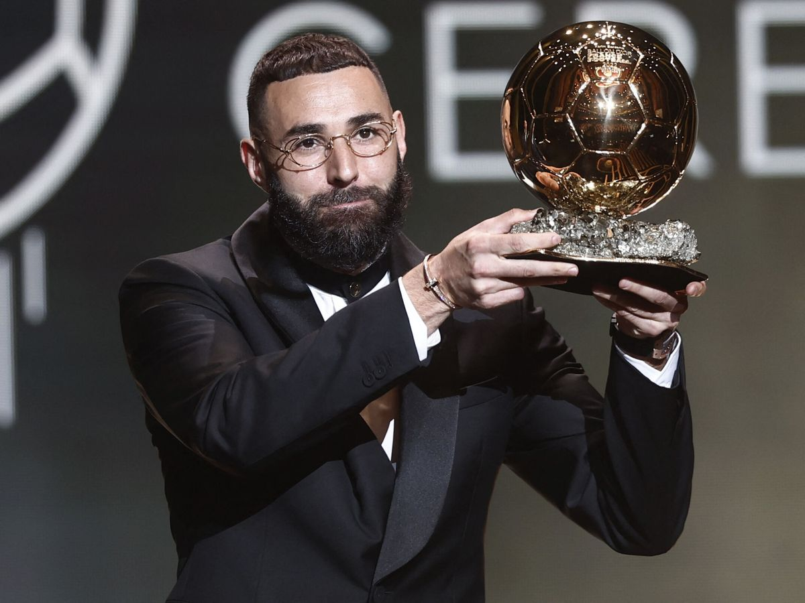

Karim Benzema se ha proclamado este lunes como el ganador del Balón de Oro 2022,
reconociendo así una temporada en la que el francés brilló conquistando la Liga y la UEFA
Champions League y marcando la espectacular cifra de 15 goles en la máxima competición
europea, de la que es su cuarto máximo goleador histórico.
- FIFA -